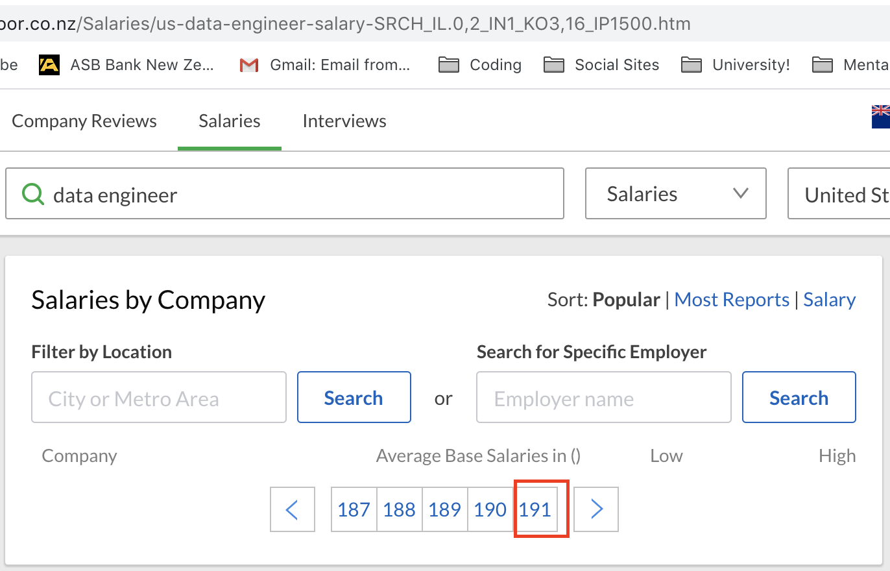
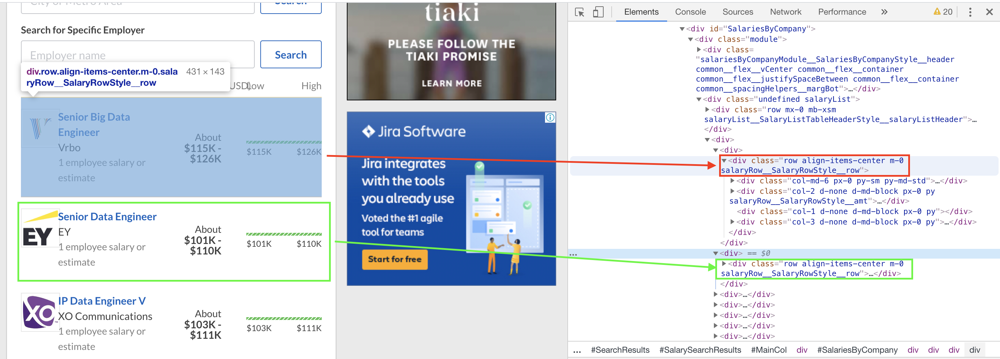

Web Scraping
 Web Scraping feels like Hacking!
Web Scraping feels like Hacking!
The Idea
An ex-colleague, Dhilip and I wanted to do a series of end-to-end projects in Data Science and Analytics for fun and to pick up skills along the way that would serve our future careers in this space. When Dhilip approached me for project ideas, I already had one I’ve thought about for quite some time.
It was a timely project for us Qrious interns, who were deliberating on our next career move following the summer internship. Towards the end of our internship, a few of us (excluding me but including Dhilip) were graduating and applying for full-time jobs in the data space. Our discussions naturally gravitated to what starting pay we could expect for careers in data science, data engineering, and analytics. I imagined if we had an amount for each job averaged from recent, accurate salary data collected over a large number of companies operating in different industries, we had evidence to make sure future salary negotiations were fair!
The Execution
Glassdoor is a job reviews site with job benefits and salary information reported anonymously by employees of various companies. It was our main data source for this project. Collecting a vast amount of data from the site would require automation, using a technique called scraping. This is a technique used to extract content from specific HTML tags in a webpage, and in our case, exploits two technologies to do so: Selenium and BeautifulSoup.
Selenium is a Java-based tool used in website testing to automate specific interactions with webpages (i.e. clicking on links, logging in, navigating the page, etc). Since it automates interacting with the DOM, it’s being used in Data Science to scrape data from websites. BeautifulSoup, on the other hand, is a Python library that parses HTML and makes it easy to extract specific elements from it.
The code
1. First, we import the necessary libraries:
Python Selenium libraries (Scraping)
- webdriver - contains tools for working with an automated web browser
- webdriver.chrome - specifies Google Chrome as our automated browser
- time - the sleep function allows our automated tasks (i.e. clicking on links) to have a delay. Important for not being blocked as a bot by some websites
- BeautifulSoup - a python library for parsing HTML pages and grabbing content from specific HTML tags easily
- lxml - a parser for BeautifulSoup, allowing the HTML pages to be parsed as xml (and queried with xPath)
Standard Python Libraries
- pandas - a library for working with data-frames
- csv - a tool for reading and writing CSV files
- itertools - an iterator library
from selenium import webdriver
from selenium.webdriver.chrome.options import Options
from webdriver_manager.chrome import ChromeDriverManager
from time import sleep
from bs4 import BeautifulSoup
import lxml
import pandas as pd
import csv
from itertools import zip_longest
2. Then, we set up an automated browser for scraping
In this step, we navigate to Glassdoor’s Salaries page and type in whatever Job Title we’d want salaries for, in whatever location. In this example, we’d want to grab Data Engineers’ salary information from the United States. We have to be logged into a Glassdoor account to do this.
We then copy paste the URL of the resulting page into the driver.get(url) method below.
Next, we find the last page of results Glassdoor has for this particular search. This is important as we’re setting up our browser to automatically cycle through all pages of the search, grabbing salary information from each. We do this by modifying the URL in our browser, adding the string _IP1500 just before the .htm. * this lets us jump to the very last page of salary information, as it is likely that there won’t be 1500 pages worth of search results. If there is, just adjust the IP number to be larger.
Once we’ve jumped to the last page of results, note down what that page is (by looking at the last number in the carousel button as such (red in the image below):

and copying that number onto the lastPageNo variable in the below code. In below’s example, page 191 is the last page, and the for loop cycles through each page until it reaches that, employing a delay of at least 1.5s before it goes on to the next page.
#creating empty arrays to hold job title, company name, job mean pay and pay range information
job_title = []
company_name = []
mean_pay = []
pay_range = []
lastPageNo = 191;
#going through 184 pages of salary information
for pageno in range(1,lastPageNo):
driver = webdriver.Chrome(ChromeDriverManager().install())
#getting webpage in glassdoor
if pageno == 1:
driver.get("https://www.glassdoor.co.nz/Salaries/us-data-engineer-salary-SRCH_IL.0,2_IN1_KO3,16.htm")
else:
driver.get(
"https://www.glassdoor.co.nz/Salaries/us-data-engineer-salary-SRCH_IL.0,2_IN1_KO3,16.htm" + "_IP" + str(pageno) + ".htm"
)
time.sleep(1.5)
3. We parse the HTML of each search result page…and SCRAPE!
…Using Beautifulsoup. The page_source attribute of the driver grabs the page with its corresponding HTML tags, and parses it with lxml, which as mentioned above, allows us to query the results using xpath if we wished.
After parsing, we then grab specific HTML content. We do this by:
- Inspecting the html tags where our information lies, by using Google Chrome’s inspect option
- Collecting information that would distinguish our target HTML tag/s from others
Tag Classes and IDs are useful for this. We see in the below screenshot, for example, that each salary block is enclosed by a

We do the same for every piece of information we want (i.e. job titles, company name, average salary, and salary range in this example). These bits of info were obtained the same way as above. We looped through each salary block above to grab the specific information, as the below code shows.
#continuation from code above (still inside the for loop)
#parsing the page through lxml option of beautifulsoup
html = driver.page_source
soup = BeautifulSoup(html, 'lxml')
#getting each salary block
salaryBlocks = soup.findAll("div", {'class' : 'row align-items-center m-0 salaryRow__SalaryRowStyle__row'})
#for each salary block, find the job title, company name, average pay, and pay range, and append them to the lists initialised above
for block in salaryBlocks:
entry = []
jobTitle = block.find("div", {'class' : 'salaryRow__JobInfoStyle__jobTitle strong'}).find("a").text
job_title.append(jobTitle)
companyName = block.find("div", {'class' : 'salaryRow__JobInfoStyle__employerName'}).text
company_name.append(companyName)
meanPay = block.find("div", {'class' : 'salaryRow__JobInfoStyle__meanBasePay common__formFactorHelpers__showHH'}).find('span').text
mean_pay.append(meanPay)
#if a pay range exists, grab it, otherwise, indicate none exists
try:
if block.find("div", {'class' : 'col-2 d-none d-md-block px-0 py salaryRow__SalaryRowStyle__amt'}).find("div", {'class' : 'strong'}):
payRange = block.find("div", {'class' : 'col-2 d-none d-md-block px-0 py salaryRow__SalaryRowStyle__amt'}).find("div", {'class' : 'strong'}).text
pay_range.append(payRange)
elif block.find("div", {'class' : 'col-2 d-none d-md-block px-0 py salaryRow__SalaryRowStyle__amt'}).find("span", {'class' : 'strong'}):
pay_range.append("N/A")
except:
pay_range.append("N/A")
driver.quit()
4. We save the results to a .csv file
Once we’ve obtained all the information we need, we store them into a python data-frame, which allows us to store the data in a tabular format. The columns of the table correspond to job title, company name, mean pay, and the pay range, whilst the rows are individual companies.
The below code shows how the results are stored in a data-frame and eventually converted to a .csv file for easy reading into your favourite data analysis program/language later on.
#process the lists into a final dataframe, and save to a CSV
final = []
for item in zip_longest(job_title, company_name, mean_pay, pay_range):
final.append(item)
df = pd.DataFrame(
final, columns=['jobTitle', 'companyName', 'meanPay', 'payRange'])
df.to_csv("Data Engineer Salaries United States.csv")
The final output of this scraping is a 28,000 row file, containing salary information for Data Engineers, Analysts, Scientists, and Machine Learning Engineers in Australia, New Zealand, and the United States. The file can be downloaded here for free :)